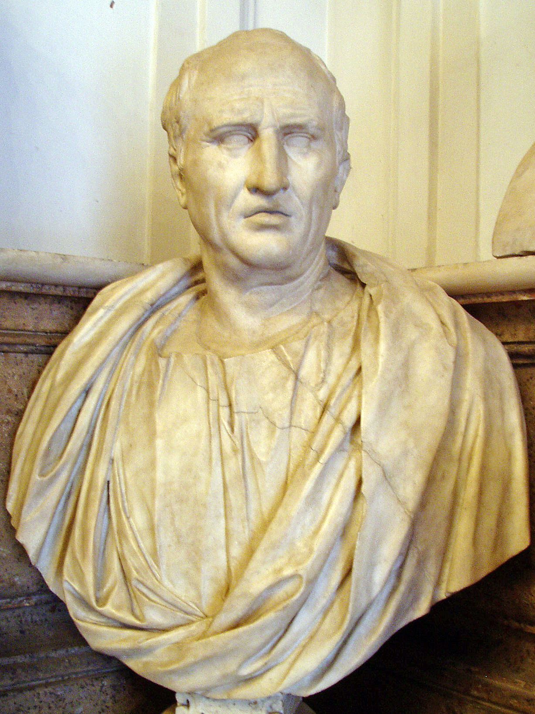
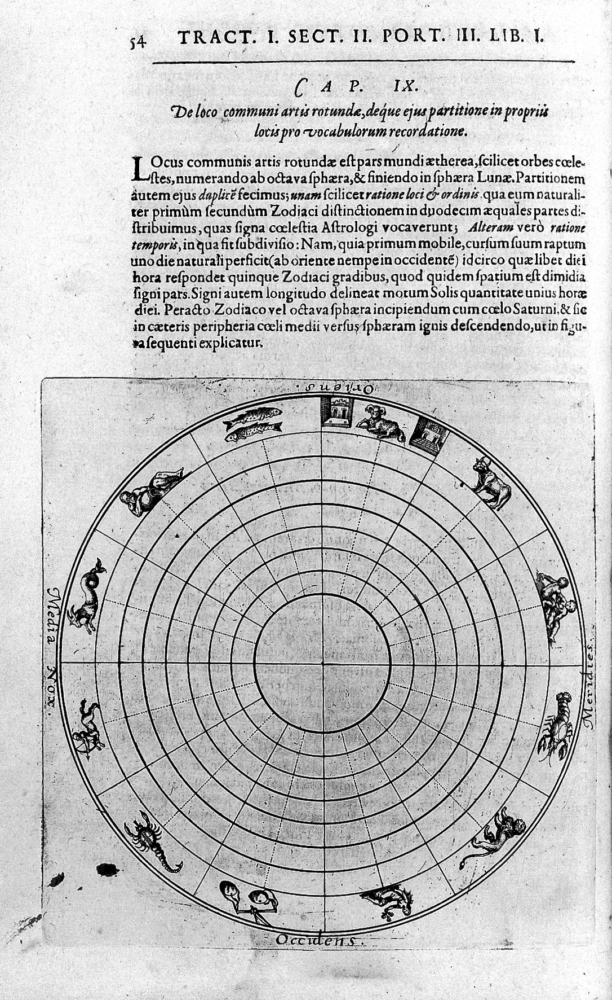

B.C.~1966METHOD OF LOCI키케로 · 퀸틸리아누스 · Frances Yates
지식은 외우는 것이 아니라 — 짓는 공간입니다.

CICERO · B.C. 106~43
로마 웅변가. De Oratore에서 기억의 궁전을 체계화.

Robert Fludd, Art of Memory (1621) · Wellcome
키케로와 퀸틸리아누스부터 시작된 기억의 궁전(Method of Loci)은 — 머릿속에 익숙한 건물을 짓고, 각 방에 외울 것을 두는 기법입니다. 1966년 Frances Yates가 The Art of Memory로 정리하면서 르네상스 학자들의 핵심 도구였음이 밝혀졌습니다.
짓는다는 것
받아 외우는 것이 아니라 — 자기 머릿속에 방을 만들고, 가구를 배치하고, 동선을 정하는 일. 지식이 자기 공간 안의 좌표로 자리잡습니다.
궁전 vs 창고
이 자세가 회복되지 않으면 — AI는 우리의 궁전이 아니라 창고가 됩니다. 필요할 때 꺼내 쓰는 외부 저장소.
창고에서 꺼낸 답은 자기 것이 되지 않습니다. 궁전에 한 칸씩 들여놓는 일만이 — 자기 지식이 됩니다.